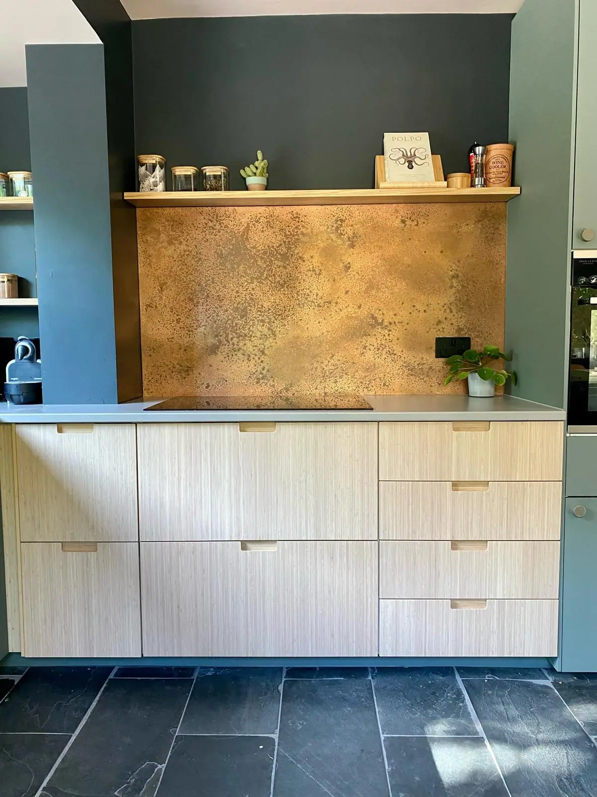
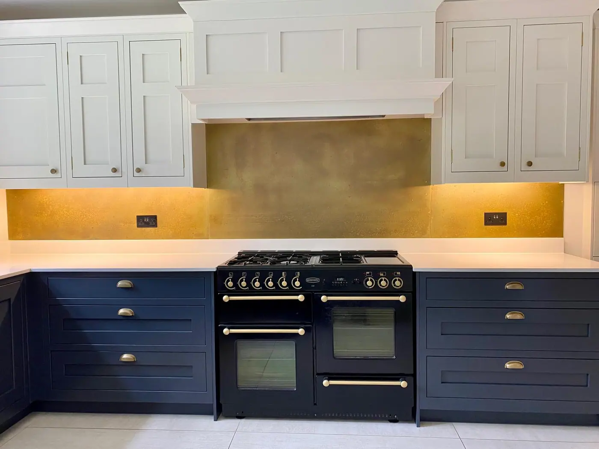

From baby to navy, there’s something about the many shades of the colour blue that just works in the kitchen. Depending on the hue, blue can be fresh and modern, regal and antique, bohemian and bold. But whatever the aesthetic, blue is always calming. Perhaps that’s why it looks so good in the room we come home to after a long day at work, the place where we prepare (and often eat) our food. Who wouldn’t want a soothing, relaxing kitchen? [sigh]. Before we nod off, here’s a beautiful visual list of some of the very best blue kitchens we could find.
1. Pale and Interesting
<span data-mce-type="bookmark" style="display: inline-block; width: 0px; overflow: hidden; line-height: 0;" class="mce_SELRES_start lazyload"></span>
Clean cabinetry in the palest of pastel blues gives this kitchen a cool, clean look. We love the addition of matching feature light fittings for a touch of mid century style. Those and the tile-patterned splashback and plants in stoneware vases add texture and keep things far from clinical.
2. The Midas Touch
A similar principle to the first kitchen on the list, except this one comes with added golden tones. We created this bespoke aged brass splashback for our client and love how it warms up their gorgeous blue kitchen. This space is a lesson in how to use multi-tonal blues, too: the blue-grey on the walls, the powder-coloured units – there’s even a hint of blue in the slate floor.
3. In the Navy
Midnight blue cabinetry adds a real sense of luxury to this classy kitchen. We love the drama of the marble splashback, and the platform for art provided by the wall shelf. As is often the case with blue, brass makes the perfect contrasting accessories; just look at those handles, light-fittings and taps.
4. Down on the Farm

This fabulous farmhouse-style kitchen belongs to one of our customers and proves navy works in traditional designs as well as modern. The contrasting white cabinetry on the upper units gives the room a sense of space and light. An iconic stove introduces the rich concept of dark blue and brass, crowned by a standout AGA splashback in our Wiltshire finish .
5. Bold is Beautiful
There’s no shying away from colour in this vibrant kitchen, where even the ceiling and window frame are coated in a deep, luscious blue. That rich sea of colour is broken up by a few carefully-chosen artefacts. Sunshine-coloured tassels and a smooth, matte jug pop against the ultramarine background, proving that yellow (and brass!) shades are the perfect pairing for blue.
6. A Splash of Satsuma
Yellow looks great with blue, but orange looks even better. Why? The two colours are opposite each other on the colour wheel, meaning they’re the ultimate contrast. This contemporary plywood kitchen, with its mix of blue and orange units, is a case in point. Another way to introduce orange to your kitchen could be with a copper splashback or weathered Corten steel .
7. A Cobalt From the Blue
Inject dazzling pzazz into your kitchen with the incredibly vivid shade of cobalt. Also known as ultramarine and electric blue, this unique pigment is made when cobalt oxide is combined with aluminium oxide. Here, white and delicate pink walls let the cupboards and island do the talking. Note the zap of yellow from clever details, especially the painted windowsill.
8. Totally Devoted to Blue
If you’re really in love with a colour, consider committing to it completely. This opulent kitchen takes a high-gloss finish in a dreamy turquoise and applies it to cabinetry, stools, walls, doorframes… everywhere! It’s not a look that every home could pull off, but the high ceilings and ornate panelling of this place lend themselves to this outlandish, statement style.
9. Designer Diner
Textiles rarely make an appearance in kitchen design, but in this diner-style kitchen with its booth seating, they take centre stage. A refreshing combination of bright blue and white, there’s a hint of Santorini about this colour scheme. And whilst you can’t see the sea shimmering outside, that picture window on to the greenery would brighten the dullest of mornings.
10. Sunny Side Up
OK, we know we’ve already featured one blue and orange kitchen, but this colour combination is so strong! We picked out this design for the last on our list for its lively features: delicate lampshades, pretty scalloped flooring and industrial stools all show how using the right accessories can usher real character into your kitchen.


If you can dream it, we’ll make it.
Bars, balustrades, staircases, worktops, cladding and pieces that don’t have a name yet. Our designers and craftspeople work in brass, copper, zinc and steel, and alongside wood.